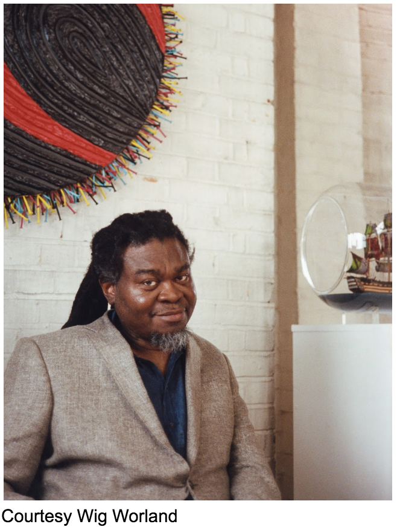
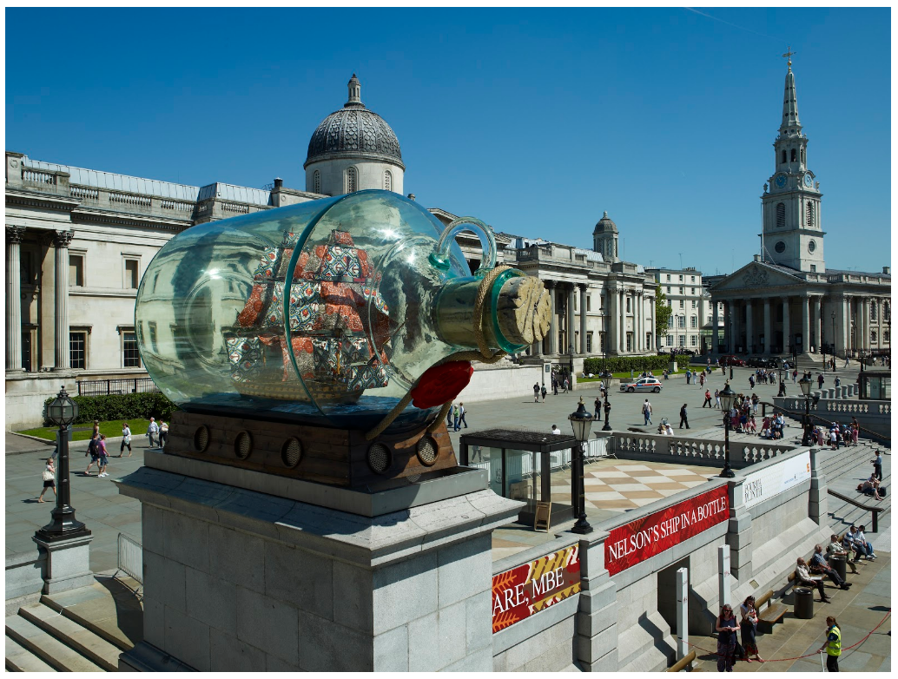
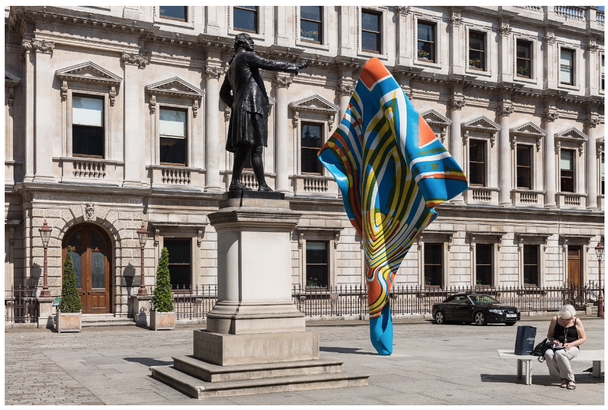
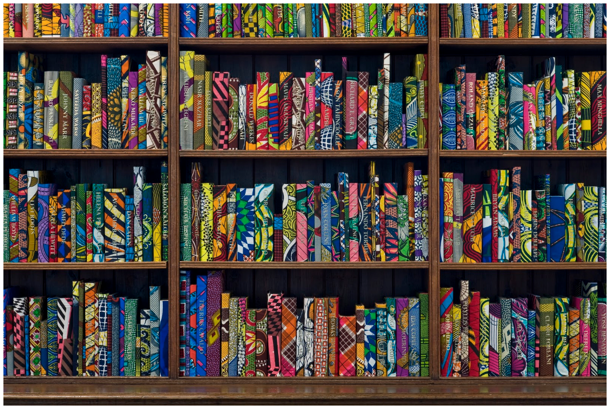

At the centre of my practice is the interrogation of historical and present day forms of prejudice and discrimination. This is done through a rigorous exploration of formal and theoretical conversations around colonialism and its resulting effects on a younger generation. After encountering the activism in the works of W.E.B Du Bois, Dr Martin Luther King Jr, artists of the Harlem Renaissance, Frantz Fanon, Edward Said and many more, I developed a more critically engaged art practice.
In the context of the civil rights struggles and continuing prejudice in the 90’s I evolved a metaphor that has over several years become my method of challenging binary stereotypes of simplistic ideas of black and white that often lead to misplaced prejudice. My work primarily engages with the historical and present day relationship between Africa and Europe and the global manifestation of those relations.
I trace the trajectory of a textile that has come to represent African identity. The bigger implications of how the colonial relationships between colonial Holland, Indonesia and Africa have created the batik textiles, that have now become ubiquitous signs of African identity in the diaspora.
Context in the past few years have become a poignant political tool in my practice, since I installed my public sculpture ‘Nelson’s Ship in a Bottle’ in London’s Trafalgar Square I have continued to explore the accessible and political potential of a dialogue through art with millions of people.

Courtesy of the artist and Stephen Friedman Gallery,
London. Photographer: Stephen White.

Courtesy of the artist and Stephen Friedman Gallery,
London. Photographer: Mark Blower.

Courtesy of the artist and Stephen Friedman Gallery,
London. Co-commissioned by HOUSE 2014 and Brighton Festival.
Photographer: Jonathan Bassett.